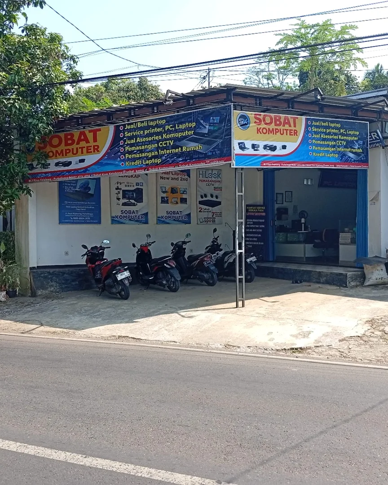

Service Laptop
Pemeriksaan dan perbaikan, penggantian keyboard, SSD, RAM, LCD, hingga baterai. Melayani juga upgrade performa dan install ulang sistem.

Service laptop, jual beli PC, pasang CCTV, sampai internet rumah — semua ada di sini. Tinggal chat, beres.
Kenalan dulu, yuk.
New Sobat Komputer adalah toko teknologi di Kejobong, Purbalingga. Kami bantu warga sekitar yang punya masalah sama laptop, PC, atau printer.
Selain itu, kami juga terima pasang CCTV buat keamanan rumah dan pendaftaran internet rumah iPrime yang pakai fiber optik. Kalau ada kendala soal teknologi, langsung hubungi kami saja.
Lihat informasi promo dan layanan terbaru dari New Sobat Komputer.
Dapatkan berbagai penawaran menarik mulai dari kredit laptop dengan syarat mudah, paket instalasi CCTV bergaransi, unit laptop siap pakai (baru/second), hingga paket PC komputer lengkap siap kerja.
Hubungi WhatsApp kami untuk menanyakan ketersediaan promo atau detail penawaran lebih lanjut.
Tanya Detail Promo
Yang bisa kami bantu untuk Anda.
Pemeriksaan dan perbaikan, penggantian keyboard, SSD, RAM, LCD, hingga baterai. Melayani juga upgrade performa dan install ulang sistem.
Pengecekan gangguan umum PC, PC lemot atau tidak menyala, upgrade RAM/SSD, install ulang sistem, dan perawatan dasar.
Pengecekan printer tidak mencetak, kertas macet, hasil cetak bermasalah, perawatan dasar, dan instalasi driver.
Jual beli laptop dan PC dengan kondisi transparan. Silakan hubungi kami untuk menanyakan stok melalui WhatsApp.
Konsultasi dan pemasangan sistem keamanan CCTV. Hubungi kami untuk rincian jangkauan dan biaya instalasi.
Pendaftaran dan instalasi internet rumah fiber optik iPrime. Hubungi kami untuk konsultasi paket dan syarat pemasangan.
Menyediakan berbagai aksesori pendukung komputer dan laptop, seperti mouse, keyboard, flashdisk, dan kabel. Hubungi via WA untuk detail stok.
Transparan, jelas, dan bergaransi.
Menerapkan pelayanan 3S (Senyum, Sapa, Salam). Unit dicek keluhan dan kelengkapannya, lalu dicatat dengan jelas pada nota tanda terima.
Kami akan langsung mengabari jika unit sudah selesai. Apabila pengerjaan belum selesai dalam 2 hari, kami berikan update status perbaikan kepada Anda.
Saat pengambilan, unit dan kelengkapan akan dicek bersama untuk memastikan semua berfungsi normal sesuai keluhan awal.
Kami berikan garansi service 1 bulan (syarat dan ketentuan berlaku sesuai nota tertulis). Riwayat perbaikan Anda juga kami simpan untuk kemudahan ke depannya.
Kondisi barang transparan, tanpa ada yang ditutup-tutupi.
Kondisi fisik dan fungsi barang (laptop/PC) dijelaskan apa adanya, dan dipasang segel toko untuk keamanan garansi.
Pembelian laptop atau PC bekas di toko kami dilengkapi garansi mesin 1 bulan. Klaim garansi wajib menyertakan nota dan segel utuh.
Setiap transaksi pembelian atau penjualan dicatat resmi dengan nota. Jangan lupa simpan nota Anda dengan baik untuk proses klaim garansi.
Kunjungi toko kami atau hubungi via telepon.
08.00 – 16.00 WIB
Mau tanya-tanya dulu juga boleh. Langsung chat kami lewat WhatsApp, kami balas secepatnya.
Chat WhatsAppIkuti kami di media sosial: